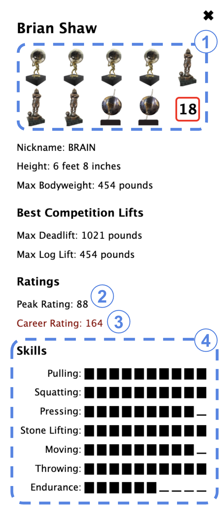

Definition of "Peak": The point(s) in time in an athlete's career when he performed his very best (i.e., won or placed well on events) at major competition(s).
Comparing Athletes: Must be done on an event-by-event basis so that athletes perform better in competitions with events that suit their strengths. Some inconsistency is built in so that athletes perform at their best 5/8 of the time, at a level below their best 2/8 of the time, and at two levels below their best 1/8 of the time. This ensures, for example, that athletes who are really good at an event will never lose to athletes who are mid-level at the same event, but they may lose to athletes of a similar skill-level. Ties are broken by a randomly generated number.
The Impact of Eras: Key assumption -- Athletes who were dominant in one era against the level of competition they faced would be similarly dominant in other eras. This may not be true for the "average" strongman in an era, but it's likely more true for the best of the best.
Number labels in the image correspond to items in the list below.
Major competitions won, as well as other international competitions won (in the red box).
Peak Rating: Each athlete is given a score of between 1 and 10 points for each event. This score directly correlates to the best the athlete has placed on each event at a major competition; for example, a 1st place max deadlift at the Arnold Strongman Classic would give the athlete a 10-point max deadlift. In rare situations where an athlete has won the same event three or more times at major competitions, 11 points is awarded.
Events are then grouped into categories (e.g., "pulling"), with the average of all events in the category representing the category score out of 10. See #4 below for a visual representation of these category averages.
The category averages are then combined to form a "Peak Rating" score. The Pulling, Pressing, Stone Lifting, and Moving categories are each weighted twice as heavily as the Squatting, Throwing, and Endurance categories.
Career Rating: Each athlete receives a career rating based on how many competitions they won or did well at in their career. This metric could use some work, but, currently, points are awarded as follows:
Skills: Category averages, as explained in #2.